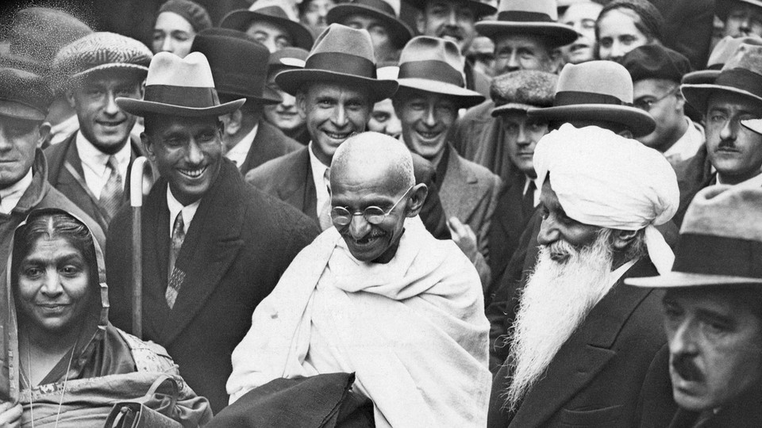

<link rel="stylesheet" href="style.css">
<main id="main">
    <title>Tribute Page</title>
    <h1 id="title">Mahatma Gandhi</h1>
    <p id="sub-title">A Freedom Fighter</p>
    <div id="img-div">
        
        <p id="img-caption">"I will not let anyone walk though my mind with their dirty feet"</p>
    </div>
    <section id="tribute-info">
        <h3 id="headline">Here's a timeline of Mahatma Gandhi:</h3>
        <ul>
            <li>
                <strong>1869</strong> - Born In Porbandar (also known as Sudamapuri)
            </li>
            <li>
                <strong>1883</strong> - the 13-year-old Mohandas was married to 14-year-old Kasturbai Makhanji Kapadia
                in an arranged marriage,
            </li>
            <li>
                <strong>1885</strong> - Gandhi's father Karamchand died.
                Gandhi, then 16 years old, and his wife of age 17 had their first baby, who survived only a few days.
                The two deaths anguished Gandhi.
            </li>
            <li>
                <strong>1887</strong> - the 18-year-old Gandhi graduated from high school in Ahmedabad.
            </li>
            <li>
                <strong>1888</strong> - he enrolled at Samaldas College in Bhavnagar State, then the sole
                degree-granting institution of higher education in the region.
                But he dropped out and returned to his family in Porbandar.
            </li>
            <li>
                <strong>1888</strong> - Gandhi aged 18, left Porbandar for Mumbai, then known as Bombay.
                Upon arrival, he stayed with the local Modh Bania community whose elders warned him that England would
                tempt him to compromise his religion, and eat and drink in Western ways.
                Despite Gandhi informing them of his promise to his mother and her blessings, he was excommunicated from
                his caste.
                Gandhi ignored this, and on 4 September, he sailed from Bombay to London, with his brother seeing him
                off.
                Gandhi attended University College, London, a constituent college of the University of London.
            </li>
            <li>
                <strong>1893</strong> - Gandhi aged 23, set sail for South Africa to be the lawyer for Abdullah's
                cousin. He spent 21 years in South Africa, where he developed his political views, ethics and politics.
            </li>
            <li>
                <strong>1906</strong> - when the British declared war against the Zulu Kingdom in Natal, Gandhi at age
                36, sympathised with the Zulus and encouraged the Indian volunteers to help as an ambulance unit.
            </li>
            <li>
                <strong>1910</strong> - Gandhi established, with the help of his friend Hermann Kallenbach, an
                idealistic community they named Tolstoy Farm near Johannesburg. There he nurtured his policy of peaceful
                resistance.
            </li>
            <li>
                <strong>1915</strong> - Mohandas Karamchand Gandhi was already a well-known political activist when the ship, the S.S Arabia, docked in Mumbai — then Bombay — on January 9, 1915. Gandhi and his wife Kasturba, had returned to India, after starting two settlements for Indians in South Africa, and launching a successful satyagraha against unfair laws and taxes on the Indian community there.
            </li>
            <li>
                <strong>1919</strong> - In 1919 Gandhi becomes a leader in the Indian National Congress political party. He campaigns for swaraj, or “self-rule.” He works to reconcile all classes and religious sects, especially Hindus and Muslims. In 1920 he launches a noncooperation campaign against Britain, urging Indians to spin their own cotton and to boycott British goods, courts, and government. This leads to his imprisonment from 1922 to 1924.
            </li>
            <li>
                <strong>1929</strong> - Gandhi leads tens of thousands of Indians on a 240-mile (385-kilometer) march to the sea to collect their own salt. The march is a protest against a British tax on salt and results in 60,000 people being arrested. In 1931 the British viceroy and Gandhi sign an agreement (the Gandhi-Irwin Pact) marking the end of a period of civil disobedience in India against British rule. The pact involves Gandhi pledging to give up the satyagraha campaign and the British viceroy agreeing to release all those who had been imprisoned and to allow Indians to make salt for domestic use.
            </li>
            <li>
                <strong>1932</strong> - Under a new viceroy, Gandhi is imprisoned again. While in prison he fasts to protest the British decision to segregate the so-called untouchables (the lowest level of the Indian caste system) by allotting them separate electorates in the new constitution. The fast causes an emotional upheaval in the country, and the British agree to change the policy.
            </li>
            <li>
                <strong>1941</strong> - Gandhi, who in 1934 had resigned as leader and member of the Indian National Congress, becomes politically active again early in World War II, demanding immediate independence as India’s price for aiding Britain in the war. He is imprisoned again, from 1942 to 1944.
            </li>
            <li>
                <strong>1947</strong> - India formally achieves independence from British rule. However, the partition of the subcontinent into India and Pakistan is a great disappointment to Gandhi, who has long worked for Hindu-Muslim unity. Rioting between Muslims and Hindus over the partition breaks out in many areas. Again Gandhi turns to nonviolence, fasting until Delhi rioters pledge peace.
            </li>
            <li>
                <strong>1948</strong> - While on his way to prayer in Delhi, Gandhi is killed by a young Hindu fanatic who has been angered by Gandhi’s efforts to reconcile Hindus and Muslims. 
            </li>
        </ul>
    </section>
    <h3>If you have time, you should read more about this incredible human being
        on his
        <a id="tribute-link" href="https://en.wikipedia.org/wiki/Mahatma_Gandhi" target="_blank">Wikipedia entry</a>
    </h3>
</main>